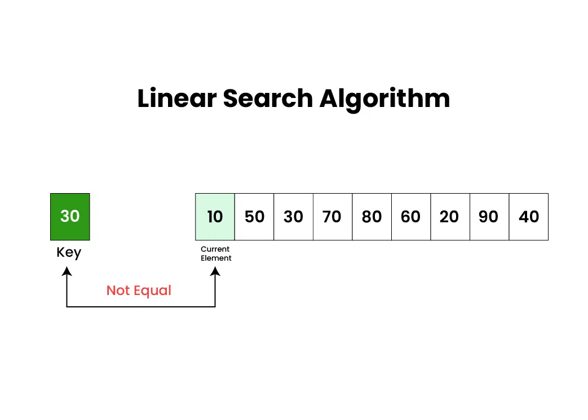
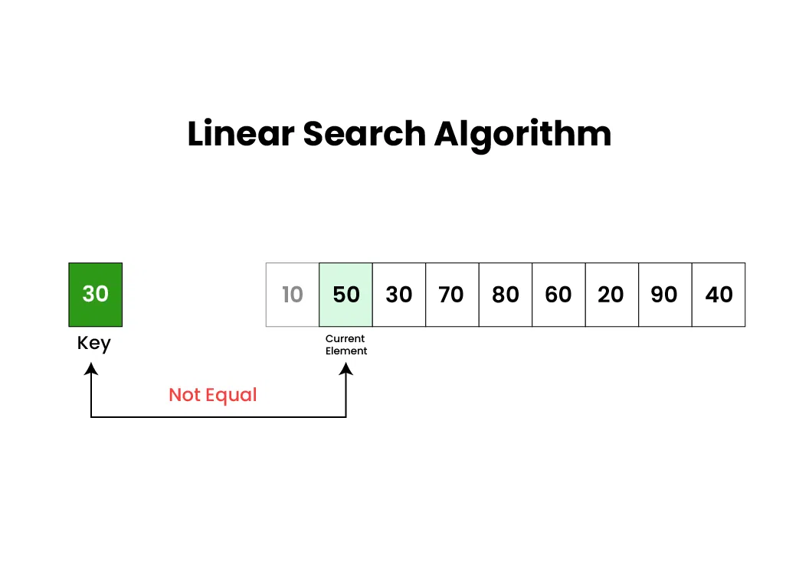
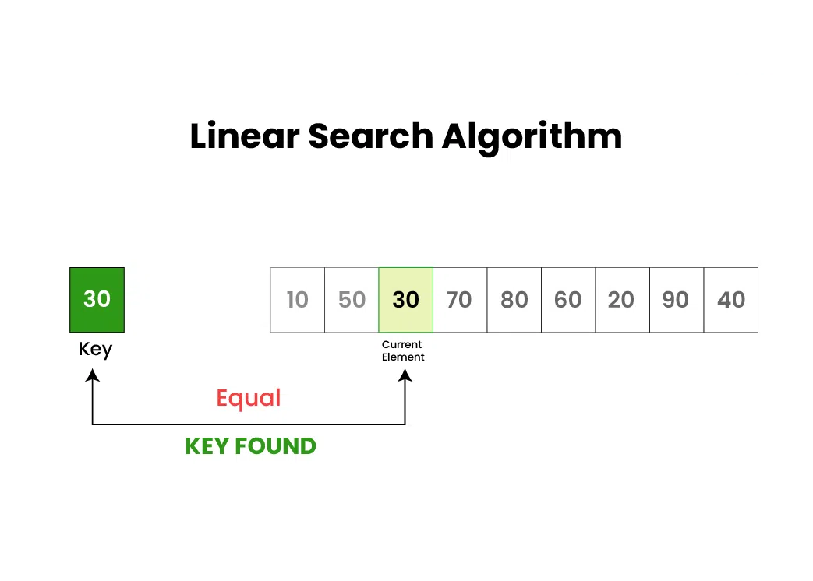
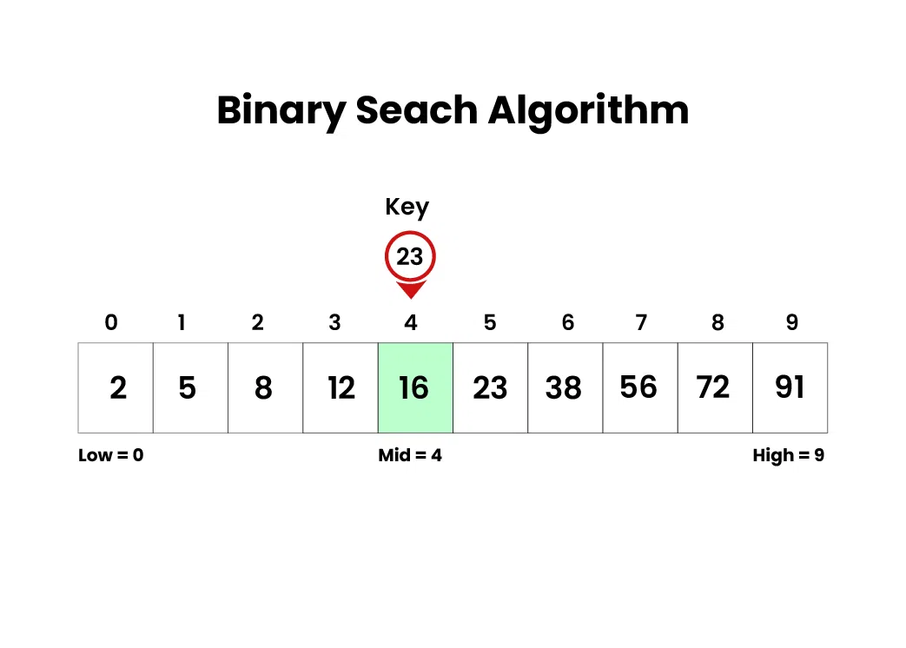
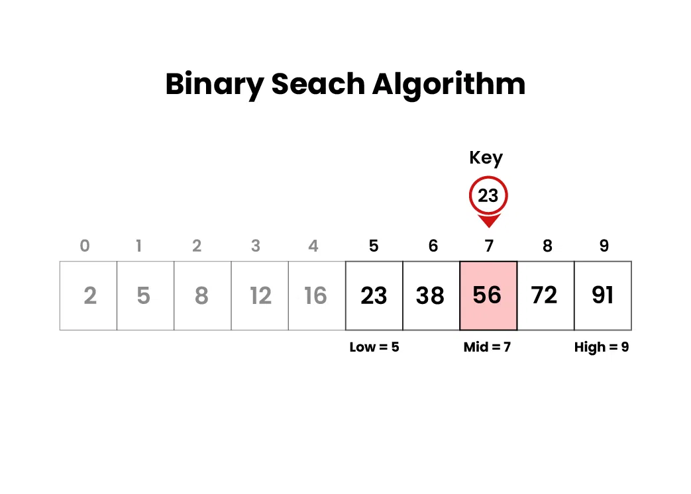
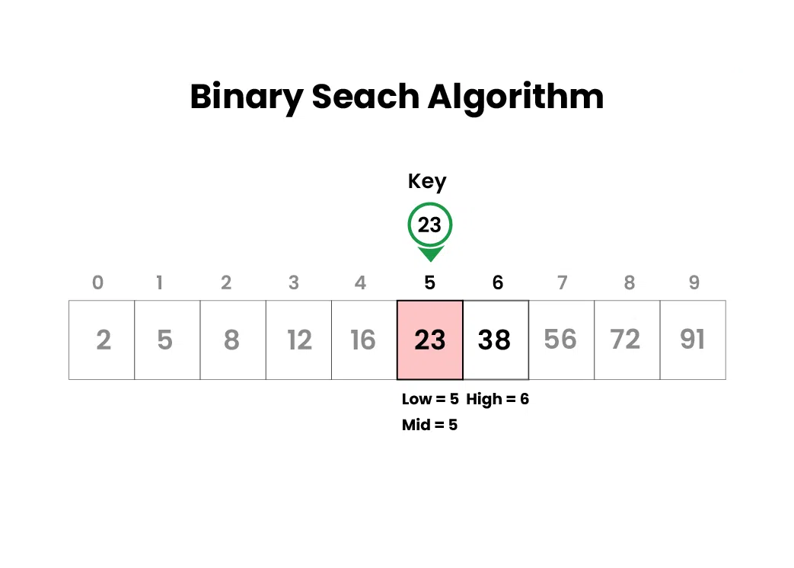

#
Algoritma Pencarian
#
Pengantar Pencarian
Pencarian adalah proses dasar untuk menemukan elemen atau item tertentu dalam kumpulan data. Kumpulan data ini bisa berupa array, list, pohon, atau struktur data lainnya. Tujuan utama dari pencarian adalah menentukan apakah elemen yang diinginkan ada dalam data dan jika ada, menemukan lokasi tepatnya atau mengambilnya. Pencarian sangat penting dalam berbagai tugas komputasi dan aplikasi dunia nyata, seperti pengambilan informasi, analisis data, proses pengambilan keputusan, dan banyak lagi.
#
Mengapa Algoritma Pencarian itu Penting?
- Algoritma pencarian yang efisien dapat meningkatkan performa program.
- Memungkinkan menemukan dan mengambil data spesifik dengan cepat dari dataset besar.
- Memungkinkan query database yang cepat.
- Digunakan dalam berbagai tugas pemecahan masalah.
#
Karakteristik Pencarian
Berikut adalah beberapa aspek kunci dari algoritma pencarian:
Elemen Target:
Elemen spesifik yang ingin ditemukan dalam kumpulan data, bisa berupa nilai, catatan, kunci, atau entitas data lainnya.Ruang Pencarian:
Seluruh kumpulan data tempat mencari elemen target. Ruang pencarian ini bervariasi tergantung pada struktur data yang digunakan.Kompleksitas:
Pencarian memiliki tingkat kompleksitas yang berbeda tergantung pada struktur data dan algoritma yang digunakan, biasanya diukur dalam hal waktu dan ruang.Deterministik vs Non-Deterministik:
Beberapa algoritma pencarian, seperti binary search, deterministik karena mengikuti pendekatan yang jelas dan sistematis. Sementara linear search bisa dianggap non-deterministik karena mungkin perlu memeriksa seluruh ruang pencarian dalam kasus terburuk.
#
Aplikasi Pencarian
Algoritma pencarian memiliki berbagai aplikasi di berbagai bidang, di antaranya:
- Pengambilan Informasi
Mesin pencari seperti Google menggunakan algoritma pencarian canggih untuk mengambil informasi relevan dari data web yang besar. - Sistem Basis Data
Pencarian digunakan untuk mengambil catatan data spesifik berdasarkan query pengguna, meningkatkan efisiensi pengambilan data. - E-commerce
Memungkinkan pengguna menemukan produk dengan cepat berdasarkan preferensi, spesifikasi, atau kata kunci. - Jaringan
Algoritma pencarian digunakan untuk routing paket secara efisien melalui jaringan, menemukan jalur optimal, dan mengelola sumber daya jaringan. - Kecerdasan Buatan
Algoritma pencarian memainkan peran penting dalam aplikasi AI, seperti pemecahan masalah, permainan (misalnya catur), dan proses pengambilan keputusan. - Pengenalan Pola
Digunakan dalam tugas pencocokan pola, seperti pengenalan gambar, suara, dan tulisan tangan.
#
Algoritma Pencarian
Algoritma pencarian dirancang untuk memeriksa atau mengambil elemen dari struktur data tempat elemen tersebut disimpan. Berikut adalah beberapa algoritma pencarian yang umum:
- Pencarian Linear (Linear Search)
- Pencarian Biner (Binary Search)
- Pencarian Ternary (Ternary Search)
- Jump Search
- Interpolation Search
- Fibonacci Search
- Exponential Search
#
1. Pencarian Linear
Pencarian Linear, atau Sequential Search, adalah salah satu algoritma pencarian paling sederhana dan langsung. Cara kerjanya adalah dengan memeriksa setiap elemen dalam kumpulan data (array atau list) satu per satu hingga menemukan elemen yang dicari atau hingga seluruh data diperiksa.
Langkah-langkah Pencarian Linear:
Algoritma Pencarian Linear bekerja dengan cara yang sangat sederhana. Berikut langkah-langkah kerjanya:
- Periksa setiap elemen dalam kumpulan data satu demi satu, mulai dari elemen pertama hingga elemen terakhir.
- Bandingkan Setiap elemen yang diperiksa dengan nilai yang dicari (disebut juga sebagai "key"). Jika elemen tersebut sama persis dengan key, maka pencarian berhasil.
- Ketika algoritma menemukan elemen yang cocok, ia akan mengembalikan posisi atau indeks dari elemen tersebut dalam kumpulan data.
- Jika algoritma sudah memeriksa semua elemen dan tidak ada yang cocok dengan key, maka pencarian dianggap gagal dan akan mengembalikan pesan bahwa elemen tersebut tidak ditemukan.
Algoritma ini dapat digunakan ketika:
- Data tidak terurut.
- Kumpulan data kecil.
- Pencarian dilakukan sekali atau jarang.
Kelebihan
- Implementasi sederhana.
- Tidak memerlukan data yang terurut.
Kekurangan
- Kurang efisien untuk kumpulan data besar.
- Waktu pencarian bisa lama karena harus memeriksa setiap elemen.
Ilustrasi Pencarian Linear
Misalkan ada sebuah array arr[] = {10, 50, 30, 70, 80, 20, 90, 40} dan kita ingin mencari key = 30.
Mulai dari Elemen Pertama:
- Bandingkan
keydengan elemen pertamaarr[0]yaitu10. - Karena
10tidak sama dengan30, lanjut ke elemen berikutnya.

- Bandingkan
Memeriksa Elemen Kedua:
- Bandingkan
keydengan elemen keduaarr[1]yaitu50. - Karena
50tidak sama dengan30, lanjut ke elemen berikutnya.

- Bandingkan
Menemukan Elemen yang Cocok:
- Bandingkan
keydengan elemen ketigaarr[2]yaitu30. - Karena
30sama dengan30, pencarian berhasil! Algoritma Pencarian Linear menemukankeypada indeks ke-2.

- Bandingkan
Contoh Implementasi Pencarian Linear di Python:
def linear_search(data, target):
"""
Mencari target dalam data menggunakan metode pencarian linear.
:param data: List data yang akan dicari
:param target: Nilai yang dicari
:return: Indeks target jika ditemukan, atau -1 jika tidak ditemukan
"""
for index, element in enumerate(data):
if element == target:
return index # Kembalikan indeks jika ditemukan
return -1 # Kembalikan -1 jika tidak ditemukan
# Contoh penggunaan
data = [10, 50, 30, 70, 80, 20, 90, 40]
target = 30
hasil = linear_search(data, target)
if hasil != -1:
print(f"Elemen {target} ditemukan pada indeks {hasil}.")
else:
print(f"Elemen {target} tidak ditemukan dalam daftar.")Output:
Elemen 30 ditemukan pada indeks 2.Analisis Kompleksitas Pencarian Linear
- Waktu:
- Kasus Terbaik: O(1) (elemen ditemukan di awal)
- Kasus Terburuk: O(n) (elemen ditemukan di akhir atau tidak ada)
- Rata-rata: O(n)
Kapan Menggunakan Pencarian Linear
- Kumpulan data kecil.
- Data tidak terurut.
#
2. Pencarian Biner
Pencarian Biner adalah algoritma pencarian yang lebih efisien dibandingkan pencarian linear, namun hanya dapat diterapkan pada kumpulan data yang sudah terurut. Algoritma ini bekerja dengan membagi ruang pencarian menjadi dua bagian dan menentukan di mana kemungkinan besar elemen yang dicari berada, kemudian mengulangi proses ini secara iteratif atau rekursif.
Algoritma ini dapat digunakan ketika:
- Data sudah terurut.
- Kumpulan data besar.
- Pencarian dilakukan berulang kali pada data yang sama.
Kelebihan
- Lebih cepat dibandingkan pencarian linear, terutama pada data besar.
- Mengurangi jumlah perbandingan yang diperlukan.
Kekurangan
- Hanya bisa digunakan pada data yang terurut.
- Implementasinya lebih kompleks dibandingkan pencarian linear.
Langkah-langkah Pencarian Biner:
Bagi Ruang Pencarian:
Cari indeks tengah dari kumpulan data dengan rumusmid = (left + right) // 2, di manaleftadalah indeks awal danrightadalah indeks akhir.Bandingkan dengan Key:
Bandingkan elemen di indeks tengah (arr[mid]) dengan nilai yang dicari (key).Jika Ditemukan:
Jikaarr[mid]sama dengankey, maka pencarian selesai dan indeksmiddikembalikan sebagai hasil.Jika Tidak Ditemukan:
- Jika
keylebih kecil dariarr[mid], berartikeyberada di sebelah kiri. Maka, setright = mid - 1untuk fokus mencari di bagian kiri. - Jika
keylebih besar dariarr[mid], berartikeyberada di sebelah kanan. Maka, setleft = mid + 1untuk fokus mencari di bagian kanan.
- Jika
Ulangi Proses:
Ulangi langkah 1 hingga 4 dengan ruang pencarian yang baru hinggakeyditemukan atau ruang pencarian habis (tidak ada lagi data yang bisa diperiksa).
Ilustrasi Pencarian Biner
Misalkan kita memiliki array arr[] = {2, 5, 8, 12, 16, 23, 38, 56, 72, 91} dan target yang ingin dicari adalah 23.
Langkah Pertama:
- Hitung indeks tengah (mid) dengan rumus
mid = (left + right) // 2. - Elemen di indeks tengah adalah
16. - Bandingkan elemen tengah ini dengan target
23. Karena23lebih besar dari16, kita fokuskan pencarian ke bagian kanan array.

- Hitung indeks tengah (mid) dengan rumus
Langkah Kedua:
- Kini ruang pencarian hanya mencakup bagian kanan dari elemen tengah sebelumnya.
- Hitung indeks tengah dari ruang pencarian baru. Elemen di tengah sekarang adalah
56. - Bandingkan elemen ini dengan target
23. Karena23lebih kecil dari56, kita fokuskan pencarian ke bagian kiri ruang ini.

Langkah Ketiga:
- Ruang pencarian sekarang semakin kecil.
- Elemen tengah yang baru adalah
23, dan ini cocok dengan target kita! - Proses pencarian selesai, dan elemen ditemukan.

Implementasi Pencarian Biner di Python
def binary_search(data, target):
"""
Mencari target dalam data yang sudah terurut menggunakan metode pencarian biner.
:param data: List data yang sudah terurut
:param target: Nilai yang dicari
:return: Indeks target jika ditemukan, atau -1 jika tidak ditemukan
"""
left, right = 0, len(data) - 1
while left <= right:
mid = (left + right) // 2
mid_val = data[mid]
if mid_val == target:
return mid # Kembalikan indeks jika ditemukan
elif mid_val < target:
left = mid + 1 # Cari di bagian kanan
else:
right = mid - 1 # Cari di bagian kiri
return -1 # Kembalikan -1 jika tidak ditemukan
# Contoh penggunaan
data_terurut = [2, 5, 8, 12, 16, 23, 38, 56, 72, 91]
target = 23
hasil = binary_search(data_terurut, target)
if hasil != -1:
print(f"Elemen {target} ditemukan pada indeks {hasil}.")
else:
print(f"Elemen {target} tidak ditemukan dalam daftar.")Output:
Elemen 23 ditemukan pada indeks 5.Implementasi Pencarian Biner Menggunakan Rekursi
def binary_search_recursive(data, target, left, right):
"""
Mencari target dalam data yang sudah terurut secara rekursif menggunakan metode pencarian biner.
:param data: List data yang sudah terurut
:param target: Nilai yang dicari
:param left: Indeks kiri
:param right: Indeks kanan
:return: Indeks target jika ditemukan, atau -1 jika tidak ditemukan
"""
if left > right:
return -1 # Basis rekursi: target tidak ditemukan
mid = (left + right) // 2
mid_val = data[mid]
if mid_val == target:
return mid # Target ditemukan
elif mid_val < target:
return binary_search_recursive(data, target, mid + 1, right) # Cari di kanan
else:
return binary_search_recursive(data, target, left, mid - 1) # Cari di kiri
# Contoh penggunaan
data_terurut = [2, 5, 8, 12, 16, 23, 38, 56, 72, 91]
target = 56
hasil = binary_search_recursive(data_terurut, target, 0, len(data_terurut) - 1)
if hasil != -1:
print(f"Elemen {target} ditemukan pada indeks {hasil}.")
else:
print(f"Elemen {target} tidak ditemukan dalam daftar.")Output:
Elemen 56 ditemukan pada indeks 7.Analisis Kompleksitas Pencarian Biner
- Waktu:
- Kasus Terbaik: O(1) (elemen ditemukan di tengah)
- Kasus Terburuk: O(log n) (elemen tidak ada atau berada di salah satu ujung)
- Rata-rata: O(log n)
- Ruang Tambahan: O(1) untuk pendekatan iteratif, O(log n) untuk pendekatan rekursif
#
Perbandingan Pencarian Linear dan Pencarian Biner
#
Algoritma Pencarian yang Sering Digunakan
Banyak jenis algoritma pencarian yang digunakan dalam aplikasi berdasarkan jenis data dan masalah yang dihadapi. Beberapa algoritma pencarian yang sering digunakan dalam aplikasi adalah:
- Dataset Kecil: Linear Search atau Hashing.
- Dataset Besar dan Terurut: Binary Search.
- Graph-Based Problems: BFS, DFS, Dijkstra, atau A*.
- Teks dan Dokumen: TF-IDF, KMP, atau BM25.
- Pencarian dengan Kemiripan: ANN atau Edit Distance.
#
Kesimpulan
Pencarian adalah komponen penting dalam algoritma dan struktur data. Pencarian Linear dan Pencarian Biner adalah dua metode yang umum digunakan dengan kelebihan dan kekurangannya masing-masing. Memahami kapan dan bagaimana menggunakan kedua metode ini akan membantu dalam mengembangkan program yang lebih efisien dan efektif.